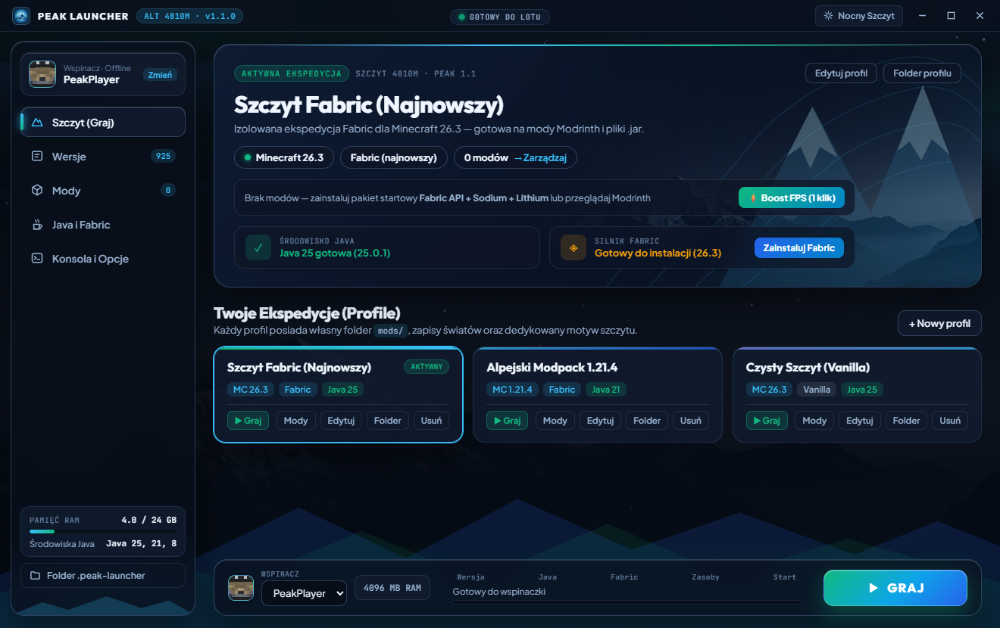
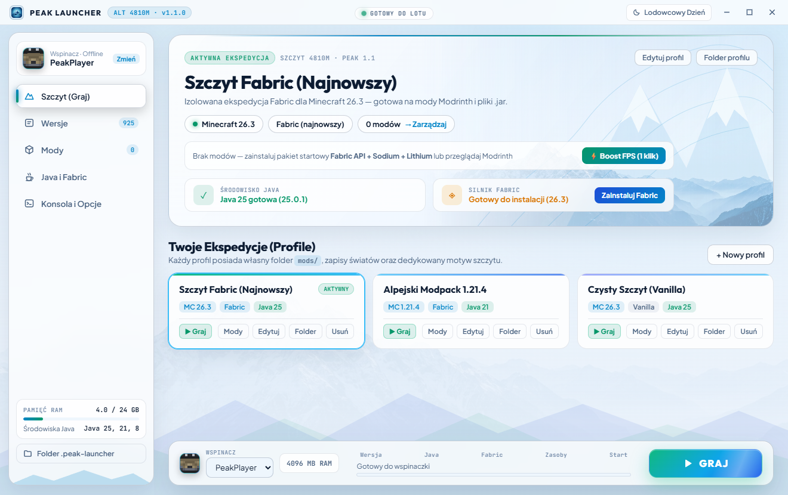
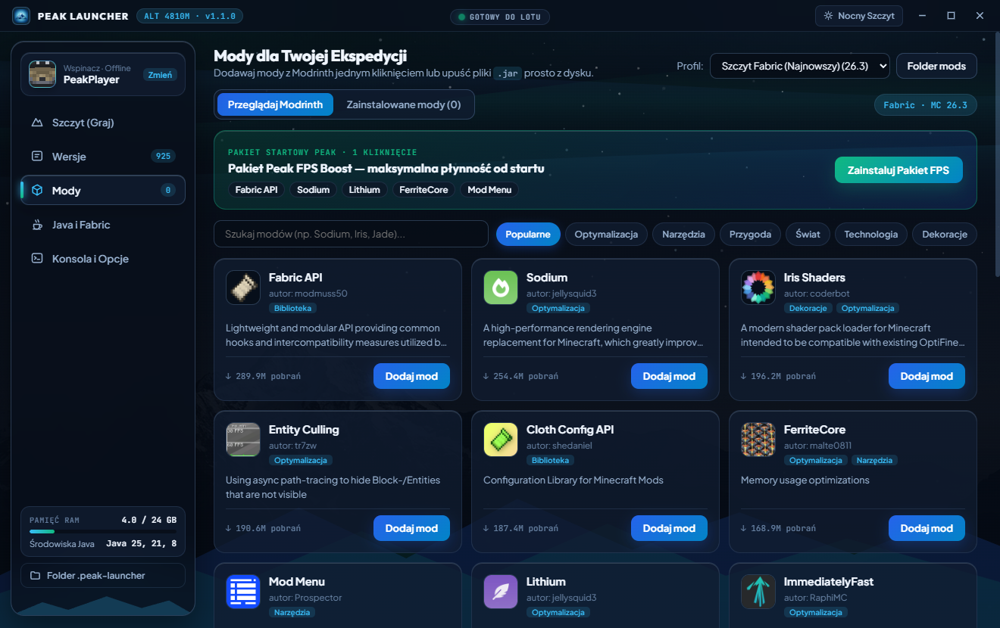

Wszystkie wersje Minecraft
Ponad 925 wersji prosto z oficjalnych serwerów Mojang — od klasycznych Alpha i Beta po 26.3 oraz najnowsze snapshoty.
Nowy interfejs Alpine Aurora z motywem Góry PEAK. Ponad 925 wersji gry, dodawanie modów z Modrinth jednym kliknięciem oraz automatyczne pobieranie Javy i Fabrica.
Katalog Modrinth + Drag & Drop .jar · Auto-Java 8/17/21/25 · Auto-Fabric Loader



Zaprojektowany od podstaw z alpejską przejrzystością i pełną automatyzacją środowiska.
Ponad 925 wersji prosto z oficjalnych serwerów Mojang — od klasycznych Alpha i Beta po 26.3 oraz najnowsze snapshoty.
Wbudowana wyszukiwarka Modrinth z auto-pobieraniem zależności (np. Fabric API), Pakiet Peak FPS Boost oraz Drag & Drop plików .jar.
Launcher sam wykrywa brakującą wersję Javy dla wybranego Minecrafta i pobiera oficjalne wydanie Eclipse Temurin jednym kliknięciem.
Instaluje Fabric Loadera oraz wymagane biblioteki dla dowolnej obsługiwanej wersji gry — bez zewnętrznych instalatorów.
Każdy profil posiada osobny folder mods/, config/ i światów oraz własny motyw kolorystyczny, dzięki czemu modpacki nigdy nie kolidują.
Przejrzyste szkło arktyczne, zorza polarna i padający śnieg, 5-etapowy pasek uruchamiania, awatary 3D graczy i konsola na żywo.
Od pobrania launchera do gry z modami w kilkadziesiąt sekund.
Wybierz wygodny instalator Windows (.exe) lub wersję Portable bez instalacji.
Utwórz ekspedycję z dowolnej wersji gry i dodaj mody z Modrinth lub upuść pliki .jar.
Brakująca Java oraz Fabric zainstalują się automatycznie przed startem Minecrafta.
Wybierz instalator Windows albo wersję przenośną Portable.